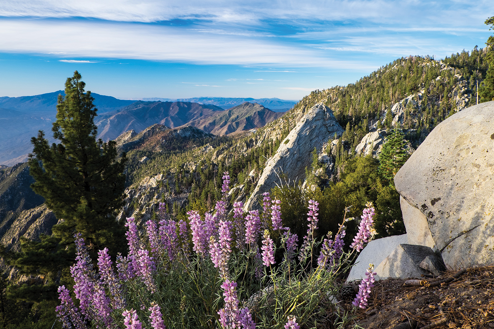

SOAR TO NEW HEIGHTS WITH PALM SPRINGS AERIAL TRAMWAY/div>
Not far from Newport Coast’s picturesque beachscapes, verdant canyons and manicured neighborhood enclaves lies a vastly different but equally magical world, where the ocean’s salt-permeated mist dissolves into the arid warmth of the Sonoran Desert. An easy two-hour drive to the east gets me to Palm Springs, a desert retreat where Mid-century modern meets modern-day L.A. At the far edge of town, a road winds uphill from the iconic main drive to one of the destination’s coolest attractions: the Palm Springs Aerial Tramway.
At the junction of North Palm Canyon Drive and Tramway Road, a dramatic, kite-shaped roof draws my eye. The Albert Frey and Robson Chambers designed structure, originally the Tramway Gas Station, houses the Palm Springs Visitors Center. Just past that pointed roof, I obediently (per the signage) turn off my car’s AC to protect my engine from the steep climb. At 3.8 miles long and nearly 2,000 feet of elevation gain, the road is as popular with runners as it is with tram-goers. Hugging mostly open desert, it empties into Valley Station, another structure built by Frey and Chambers.
Feeling the change in altitude as I get out of the car, I pick my way up the slope to the station, which reminds me of an old, small-town train depot, and purchase a round-trip ticket for the tram. As I wait my turn, I peruse gift shop souvenirs and take a seat by a back window where I can watch the golden-yellow cable cars come and go.
Not a half-hour later, I am climbing into the cabin with about 60 other passengers, all anticipating the magnificent ride that attracts some 600,000 visitors a year and that landed on CNN Travel’s “10 of the world’s best cable car rides” list in 2017. (The tram’s inaugural ride dates to 1963; the cars went through a few redesigns before landing at the current rotating cable car, which is one of only three in the world.) With a gentle jolt, we leave the cactus-speckled Sonoran behind and, in just 10 minutes, will travel 5,873 feet up to arrive amid the cool, dense forests of the San Jacinto Wilderness.

“You’re doing something that would otherwise take thousands of miles in terms of life zones,” Cameron Burrows later tells me. An ecologist who for years has observed local wildlife, Burrows notes that some scientists believe there are as many as 12 biomes between the Sonoran floor in Palm Springs and San Jacinto, and that he’s “still amazed” by the area’s diversity.
Flora and fauna inhabiting these microenvironments vary with temperature, elevation and moisture. In the arid Sonoran, which stretches from ground level to above Valley Station, plants such as brittlebush, yucca and lavender thrive, along with the critters that depend on them for food and shelter. In the Lowland Cienega (Spanish for “marsh”) underground water sources nourish cottonwoods, sycamores and the California Fan Palm, the area’s only native palm and the resort town’s namesake. Keen-eyed visitors may also spot bobcats, coyotes and kit foxes.
There is a collective gasp from the cabin as, gliding along the sturdy cable, the tramcar trundles past the first tower and causes the cabin to sway. Four more towers to go, and each bump and swing elicits the same excited response.
We ride through two “transitional” zones where desert and mountain life intermingle. Here, the canyon narrows and the temperature dips; in winter, snow might powder the mountains like sugar or, in a wet year, coat it like icing. Brittlebush and burrobush coexist with mountain mahogany and manzanita, and deer are not an uncommon sight. You might even catch a glimpse of a tawny mountain lion.